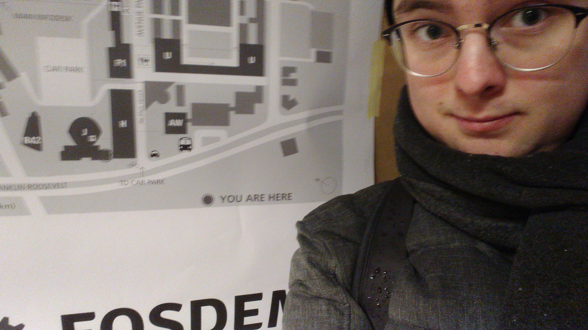
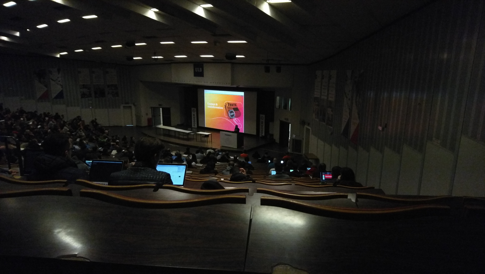
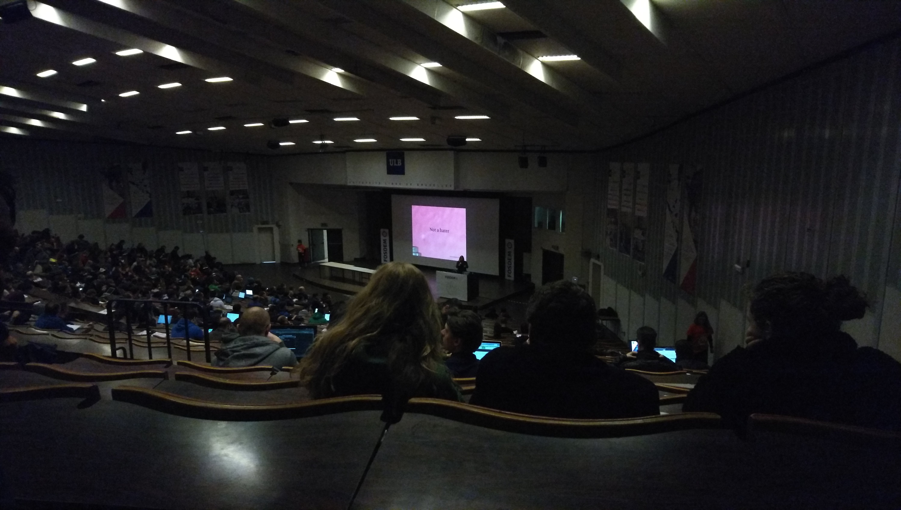
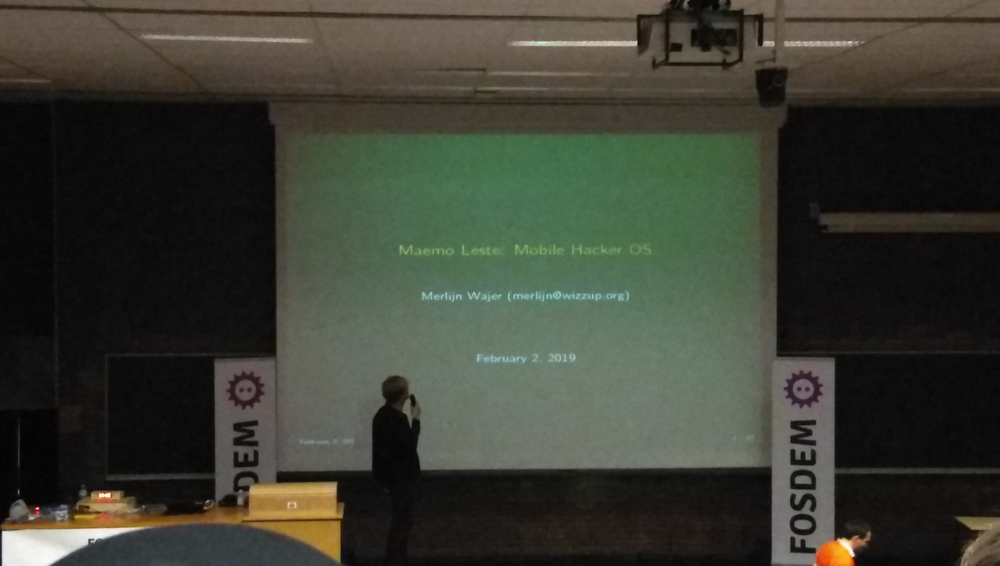
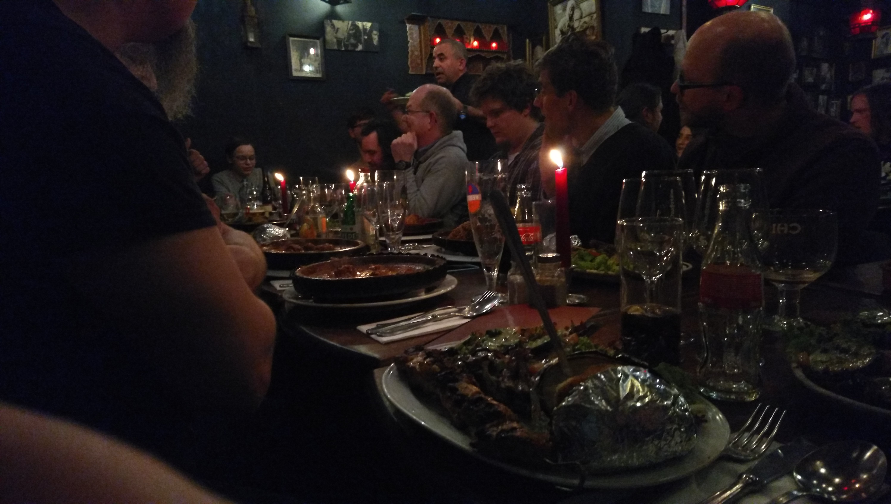

Sailfish OS community meeting
Sailfish OS community meeting
Van Assche Dylan
Master-ICT
Campus De Nayer (KU Leuven) 2018 - 2019
| Seminar | Date | Location | Assigned time |
|---|---|---|---|
| Introductie EAVISE 3D onderzoek (Patrick Vandewalle) | 05/10/2018 12u45 - 13u45 | Campus De Nayer | 1 hour |
| An application of logic-based methods to machine component design (Bram Aerts) | 12/10/2018 12u45 - 13u45 | Campus De Nayer | 1 hour |
| Preserving privacy by checking how low can you go with deep (Timothy Callemein) | 19/10/2018 12u45 - 13u45 | Campus De Nayer | 1 hour |
| Reconstruction of building interiors from cluttered pointclouds (Inge Coudron) | 26/10/2018 12u45 - 13u45 | Campus De Nayer | 1 hour |
| Diamond re-identification (Dries Hulens) | 09/11/2018 12u45 - 13u45 | Campus De Nayer | 1 hour |
| Hands-on seminar: Modern Software Development (ALTRAN) | 15/11/2018 13u45 - 17u45 | Campus De Nayer | 3 hours |
| Optimizing deep learned object detection for industrial applications (Robin Schrijvers) | 16/11/2018 12u45 - 13u45 | Campus De Nayer | 1 hour |
| Knowledge Base Paradigm Applied to School Timetabling and Other Scheduling Problems (Kylian Van Dessel) | 23/11/2018 12u45 - 13u45 | Campus De Nayer | 1 hour |
| Quick and clean deep learning classifier improvements with SVMs (Floris De Feyter) | 30/11/2018 12u45 - 13u45 | Campus De Nayer | 1 hour |
| Energy Imbalance Price Peak Prediction Using FFT-Features (Laurent Mertens) | 07/12/2018 12u45 - 13u45 | Campus De Nayer | 1 hour |
| Low latency object detection with 16-bit float and 8-bit integer networks (Maarten Vandersteegen) | 14/12/2018 12u45 - 13u45 | Campus De Nayer | 1 hour |
| FOSDEM 2019 in Brussels: see below | 02/02/2019 10u00 - 23u00 | ULB Campus du Solbosch | TBD |
Minimum amount of seminars hours to pass this class:
15 hours
Total amount of seminars hours:
13 + FOSDEM hours
| Talk/meeting | Date | Location |
|---|---|---|
| FLOSS, the Internet and the Future (Mitchell Baker) | 02/02/2019 11u00 - 11u50 | Janson room, building J |
| Blockchain: The Ethical Considerations (Deb Nicholson) | 02/02/2019 12u00 - 12u50 | Janson room, building J |
| Sailfish OS community meeting (Jolla) | 02/02/2019 14u00 - 16u30 | BoF room, building H |
| Maemo Leste (Merlijn B. W. Wajer) | 02/02/2019 17u20 - 17u35 | Ferrer room, H.2215 |
| Purism community meeting (Purism) | 02/02/2019 18u00 - 18u30 | BoF room, building J |
| Sailfish OS community diner (Jolla) | 02/02/2019 19u30 - 23u00 | La Kasbah, Brussels |
 Arrived at FOSDEM 2019
 FLOSS, the Internet and the Future
 Blockchain: The Ethical Considerations
Sailfish OS community meeting
 Maemo Leste
 Sailfish OS community diner